The key idea of logical
time is that if event e' occurs after event e in a trajectory, and
events e and e' are dependent, then e' has a higher timestamp than
e does. Equivalently, if there is path in the timeline diagram
from e to e' then e' has a higher timestamp than e does.
The converse isn't necessarily True. The timestamp for e' may be
higher than the timestamp for e even though there is no path from
e to e'.
Vector timestamps ensure that the timestamp for an event
e' in a trajectory is greater than that for an event e in the
trajectory if and only if there is a path from e to e' in
the timeline diagram.
Logical Clocks
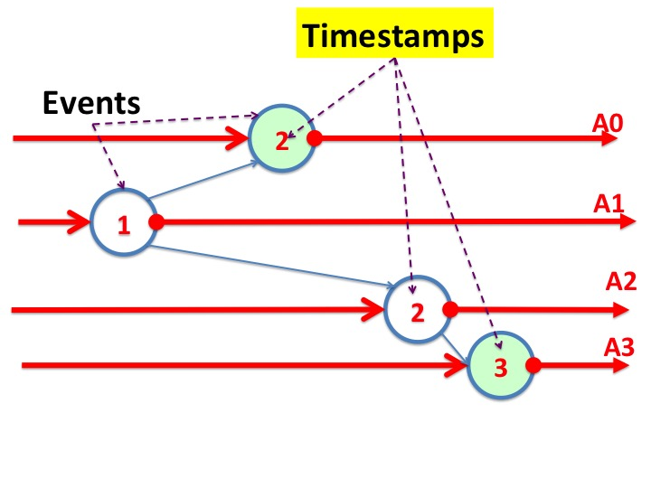
Fig.1: Logical Scalar Clocks
Fig. 1 shows a timeline diagram with agents A0, A1, A2, and A3,
and four events with the logical timestamp for each event shown
inside the circle representing the event. Look at the two events
that are colored green. The event on the timeline for agent A3 has
a timestamp of 3 while the event on the timeline for agent A0 has
a timestamp of 2; however, the graph has no path from the event on
A0's timeline to the event on A3's timeline. This figure
illustrates that an event e' may have a higher timestamp than an
event e though there is no path from e to e'.
Logical Vector Clocks
A vector timestamp is a vector with one element for each agent in
the system. Vector and scalar timestamps are computed in the same
way. The maximum of vectors is computed lexicographically. Instead
of adding a positive scalar (to the maximum of the input timestamps)
we add a positive vector with zeroes everywhere
except in the j-th position where the event modifies the state of
only agent j.
Example 1
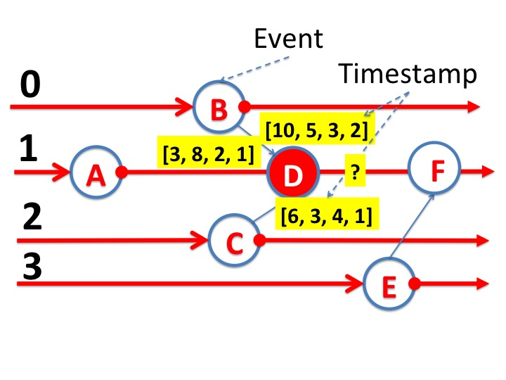
Fig.2: What is a Vector Timestamp of Event D?
Fig. 2 shows a timeline diagram for agents 0, 1, 2, 3 with events
A,.., F. Let's compute the vector timestamp for event D, shown in
red. The timestamps for events A, B, and C are [3, 8, 2, 1], [10,
5, 3, 2], and [6, 3, 4, 1], respectively. The timestamp of an
event is also the timestamp of outgoing edges from the event.
The maximum of the timestamps of the input edges of event D, taken
lexicographically, takes the maximum of each element of the vector
to get [10, 8, 4, 2].
Event D is on the timeline for agent 1. So, the timestamp assigned to
D is [0, k, 0, 0] where k is a positive value. Throughout the
course, we assume k =
1. So, the timestamp assigned to D is [10, 8, 4, 2] + [0, 1, 0, 0]
= [10, 9, 4, 2], as shown in Fig. 3.
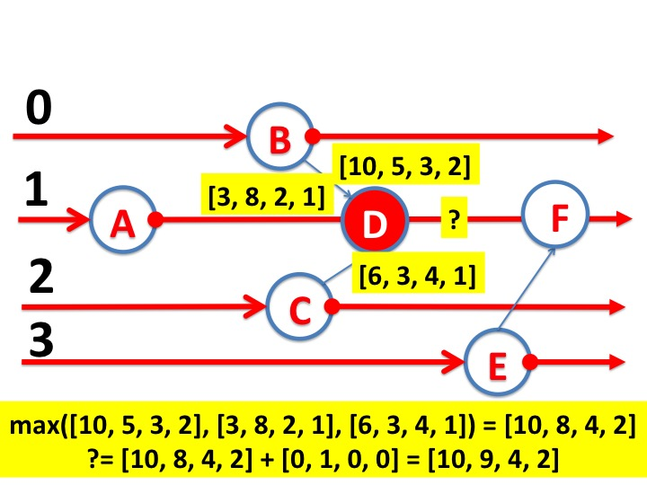
Fig.3: Assigning Vector Timestamps to Event D
Example 2
The figures below illustrate the assignment of vector
timestamps to events in a timeline diagram.
Initially, the timestamps along the timelines of
all agents is [0, 0, 0, 0].
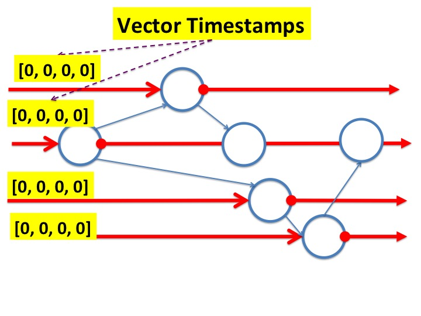
Fig.4: Vector Timestamps: Initial Values
The figures show vector timestamps computed by the algorithm for all
events, in order from the earliest to the latest, or from left to right.
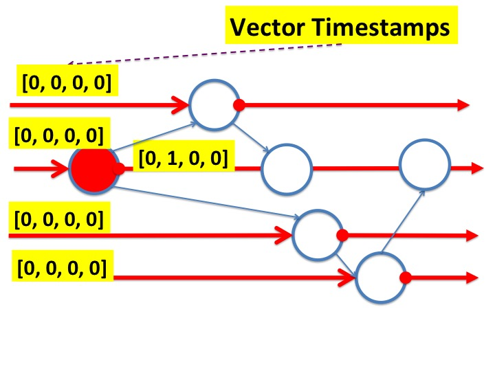
Fig.5: Vector Timestamps: Example
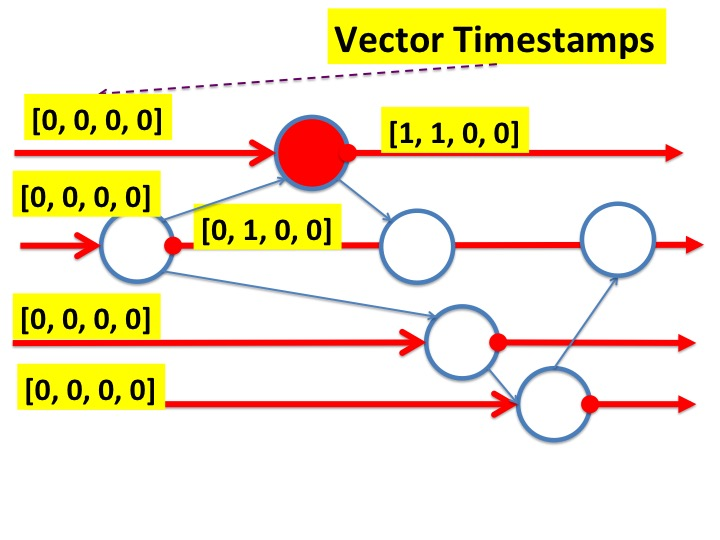
Fig.6: Vector Timestamps: Example
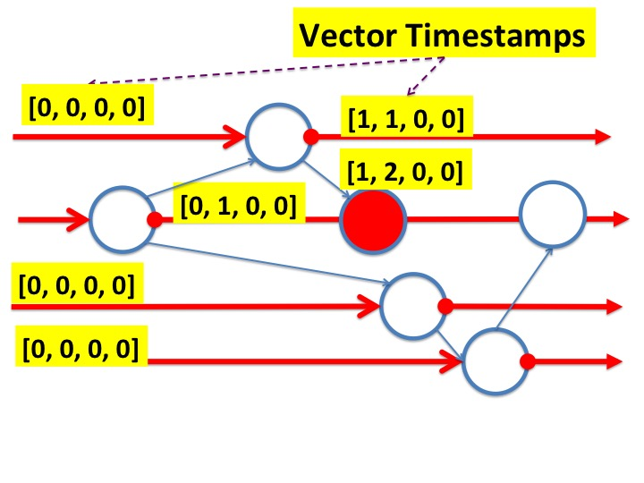
Fig.7: Vector Timestamps: Example
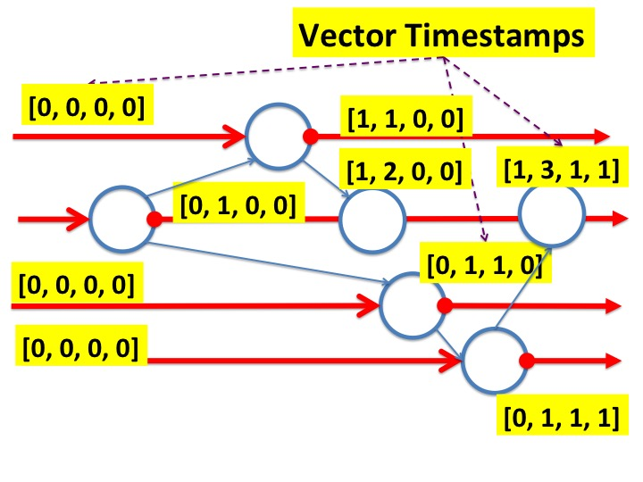
Fig.8: Vector Timestamps: Example
The next figure shows vector timestamps for all events.
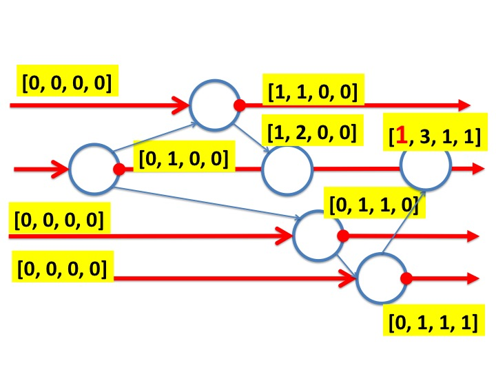
Fig.9: Vector Timestamps: Example
Proof of Correctness
Theorem
For events \(e\) and \(e'\) in a timeline diagram, and vector
timestamps \(T(e)\) and \(T(e')\), for \(e\) and \(e'\) respectively:
\(T(e') > T(e)\) if and only if there is a path in the timeline
diagram from \(e\) to \(e'\).
Proof
Consider a trajectory consisting of the sequence of events \(e_{0},
e_{1}, \ldots\). It is straightforward to prove by induction on \(j\) that the
following stronger result
holds for the sequence \(e_{0}, \ldots, e_{j}\).
Let the vector timestamp, \(T(e)\), of event \(e\) be \([T(e)_{0},
T(e)_{1}, \ldots ]\).
Then for all \(j \), there is
a path from the \(i\)-th event on the timeline for agent j to event
\(e\) if and only if \(i \leq T(e)_{j}\).
Example 3
The two figures below illustrate the idea underlying the stronger result, proved
by induction.
Let's call the rightmost event \(e\).
Look at the timestamp \(T(e)\), [1, 3, 1, 1], of \(e\).
The result says that there is a path from the
\(T(e)_{0}\)-th or first event on timeline of agent 0 to event \(e\). The first event of
agent 0 is colored red, and the path from that event to \(e\) is shown
in a heavy black line.
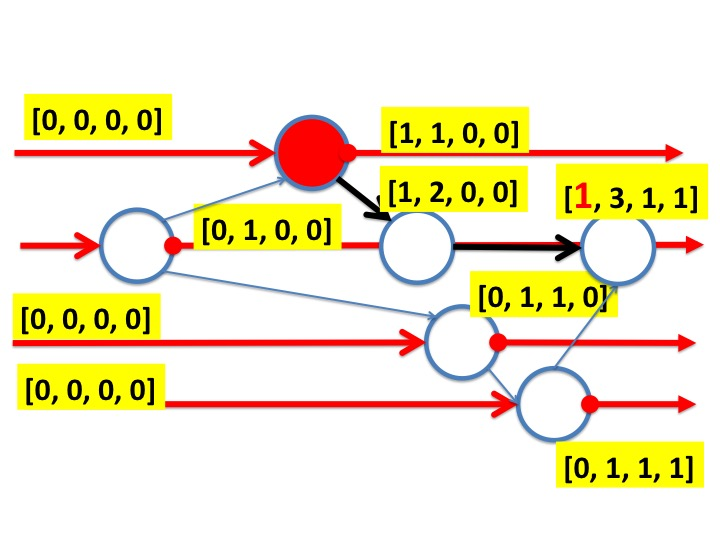
Fig.10: Idea underlying Proof
The result says that there is a path from the
\(T(e)_{1}\)-th or third event on timeline of agent 1 to event \(e\).
Fig.11: Idea underlying Proof
And we see that \(e\) is the third event of agent 1. These events are
colored red
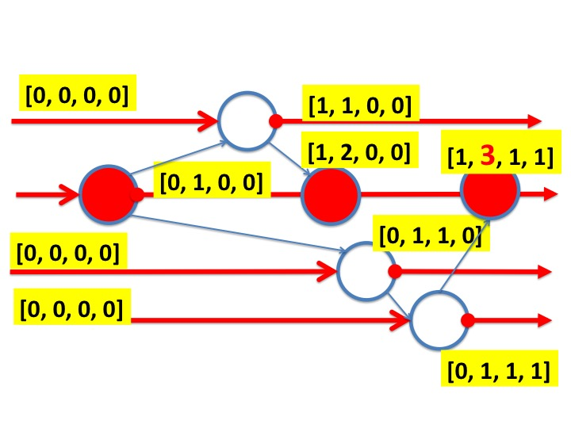
Fig.12: Idea underlying Proof
Vector Timestamps for Shared-Memory Systems
Algorithms that assign vector timestamps for shared-memory systems in which multiple
variables are modified concurrently are obvious extensions of the
systems in which only one variable is modified at each event. The
example below assumes that a variable that is accessed in an event is
modified by the event. The only idea of vector timestamps is that the
timestamp of an event \(e'\) is greater than that of an event \(e\) if
and only if there is a path in the timeline diagram from \(e\) to
\(e'\).
The algorithm increments the vector timestamp of an event for the
element corresponding to each agent that is
modified by the event.
Example 4
The figure shows a timeline diagram with agents 0, 1, 2, 3 and events
A, B, C. Event A reads and modifies the states of agents 0 and 1;
event B reads and modifies the states of agents 2 and 3; and
event B reads and modifies the states of agents 1 and 2.
The vector timestamps of A and B are [3, 8, 2, 1] and [1, 5, 6, 2],
respectively. The figure shows how the vector timestamp for event C is calculated.
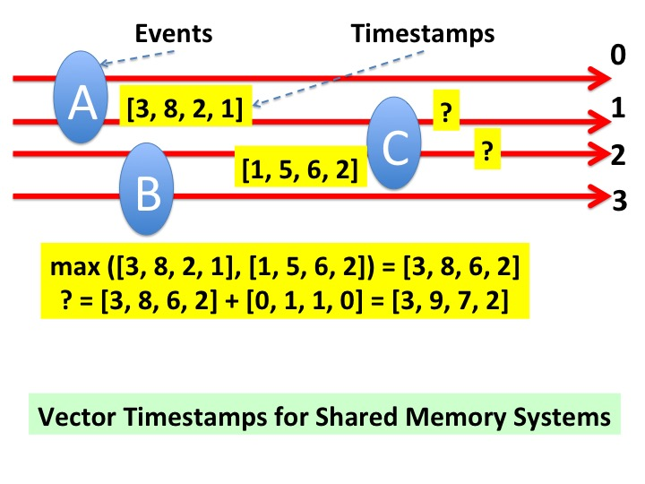
Fig.15: Vector Timestamps with Shared Memory Systems
The maximum of the inputs to event C is [3, 8, 6, 2] and the algorithm
adds [0, 1, 1, 0] --- because event C modifies the states of agents 1
and 2 --- to get [3, 9, 7, 2] for C's timestamp.
Summary
The central idea that runs through all the modules on snapshots and
timelines is this: the order of adjacent independent events in
a trajectory can be permuted without changing the final state of the
trajectory. Logical clocks is a simple mechanism that ensures that if
event \(e'\) occurs after event \(e\) in a trajectory, and the two
events are dependent, then the timestamp for \(e'\) is greater than
that of \(e\). Vector clocks ensures that the timestamp for \(e'\) is
greater than that of \(e\) if and only if events \(e\) and \(e'\) are
dependent.